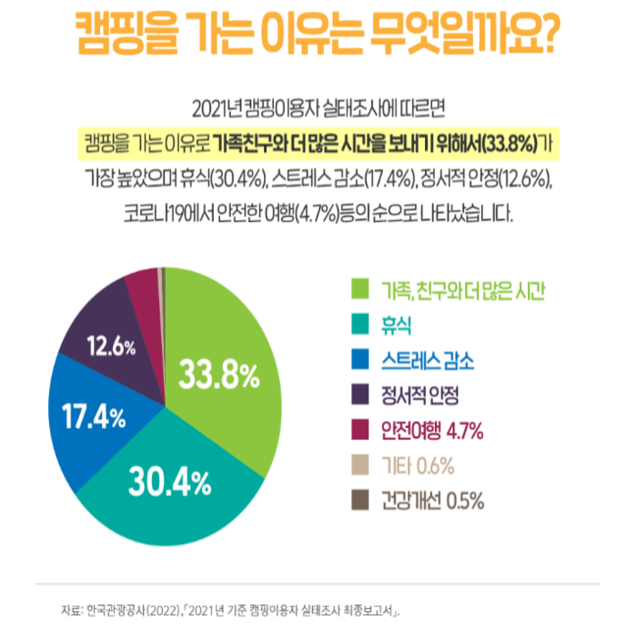
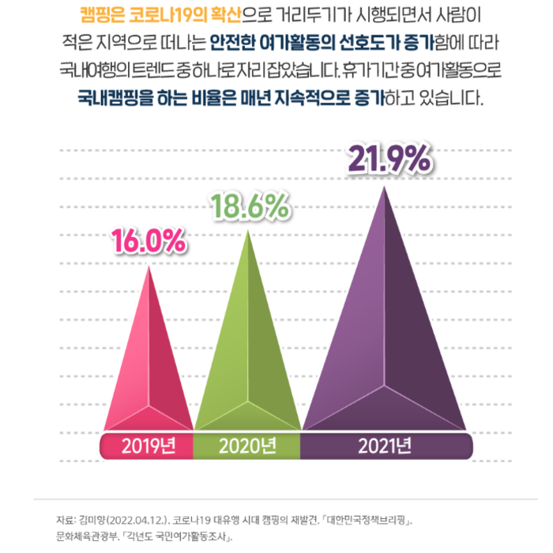

지친 도심에서 벗어나 자연속에 둘러싸여 휴식을 취하면서 스트레스 해소 및 심신의 안정을 찾는데 도움을 줍니다
가족,친구들과 함께 캠핑을하면서 그동안 못했던 대화와 소통을 하며 서로간에 유대관계를 높여줍니다.
다양한 취미(등산,낚시,운동,사진)를 캠핑에 융합시킬수 있어서 여가생활을 좀더 만끽 할 수 있습니다.
가족단위 캠핑시,아이들에게는 직접 자연을 경험하고,창의력을 키워줄수있는 자연학습의 장으로 발전할 수 있습니다.